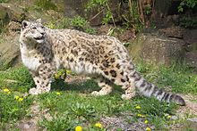
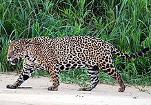
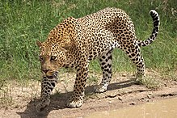

Panthera Tigris - Tiger

Traits:
- Tigers have muscular bodies with powerful forelimbs, and a tail about half the length of its body.
- Tigers' stripes are advantagous for camouflage in vegetation with strong vertical patterns of light and shade.
- The size difference between males and females is proportionally greater with males weighing up to 1.7 times more than females.
Conservation Status: Endangered
Panthera Uncia - Snow Leopard

Traits:
- The snow leopard's stocky body, thick fur, and small ears help to minimize heat loss in their frigid environment.
- Their long and flexible tail helps to maintain balance in the rocky terrain.
- The snow leopard cannot roar.
Conservation Status: Vulnerable
Panthera Onca - Jaguar

Traits:
- The jaguar is the largest cat native to the Americas.
- The fur is covered with rosettes for camouflage in the light of their habitat.
- Jaguars are adept at climbing, crawling, and swimming because of their short and stocky limb structure.
Conservation Status: Near Threathened
Panthera Leo - Lion

Traits:
- Lions are born with dark spots on their bodies which fade as they reach adulthood.
- The lion is the only member of the cat family that displays sexual dimorphism.
- The color of a lion's mane has been shown to be influenced by environment factors such as temperature.
Conservation Status: Vulnerable
Panthera Pardus - Leopard

Traits:
- The leopard's skin color varies by climate and habitat.
- Usually, leopards are larger in areas where they are at the top of the food chain.
- The maximum weight of a leopard is about 96 kilograms.
Conservation Status: Critically Endangered